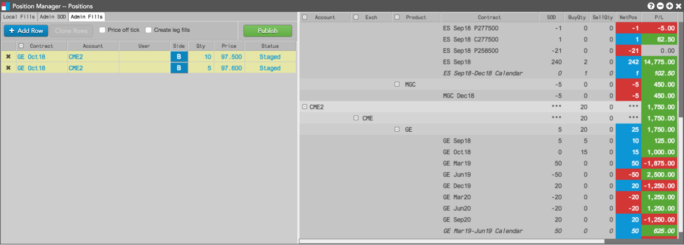
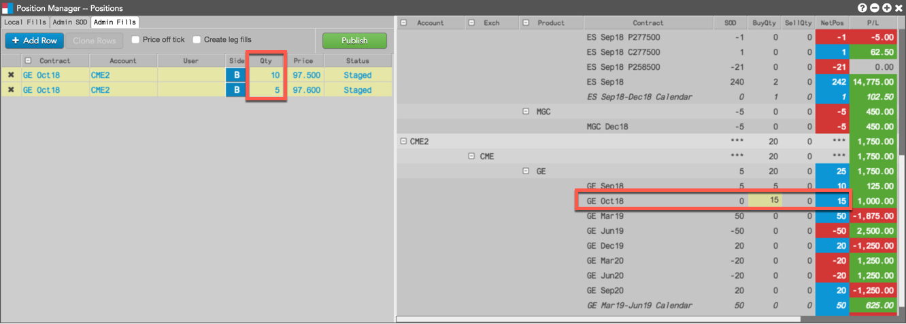
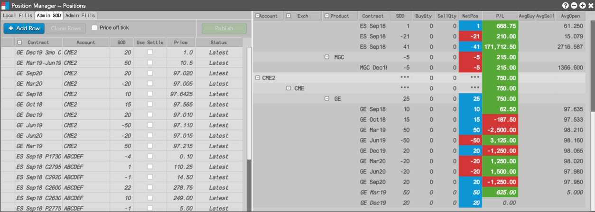
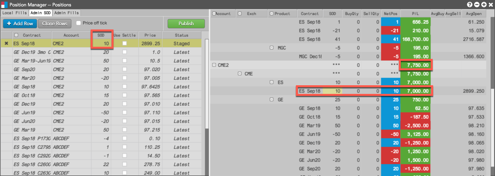

By grouping a Positions widget with the Position Manager, you can preview manual fill and SOD changes before they are published.
Previewing manual fills
To preview manual fills:
- Group a Positions widget with Position Manager in manual fill mode.

- Click a cell in each of the following columns:
- Contract — Find and select a contract by using the product search or market explorer. The settlement price for the selected contract appears in the Price column.
- Account — Select an account for the manual fill. Only accounts assigned to you that have the "Update positions" permission checked in Setup are displayed. This is a required field for a manual fill.
- User — Optionally, select a user for the manual fill. Only users assigned to the account are displayed in the dropdown menu.
- Side — Select which side of the trade to apply the manual fill. Click "B" for Buy or "S" for Sell.
- Quantity — Enter a quantity for the manual fill.
- Price — Enter a price for the manual fill or use the default settlement price for the selected contract.
- To create additional manual fills, click + Add and repeat the previous Step.
- Before publishing the fill, preview its impact on your open position in the Positions widget.

- Click Publish.
Note: When publishing a manual fill to offset a spread position, no offsetting leg positions are created. When you publish, you are only publishing a spread fill; it has no impact on the legs. You will need to publish separate manual fills to offset the leg positions if needed.
Previewing SOD modifications
To preview SOD modifications:
- Group a Positions widget with Position Manager in SOD mode.

- In the SOD row, click each cell in the following columns as needed to modify its value:
- Contract — Use the product search or market explorer to find and select a contract. The settlement price for the selected contract appears in the Price column.
- Account — Select an account for the manual fill. Only accounts assigned to you that have the "Update positions" permission checked in Setup are displayed.
- SOD — Modify the SOD position.
- Use Settle — Select whether to use the current settlement price for the contract.
- Price — Enter a price for the SOD or use the default settlement price for the selected contract.
- To create additional SODs, click + Add and repeat the previous Step.
- Before publishing the SOD, preview its impact on the open position for the contract in the Positions widget.

- Click Publish.